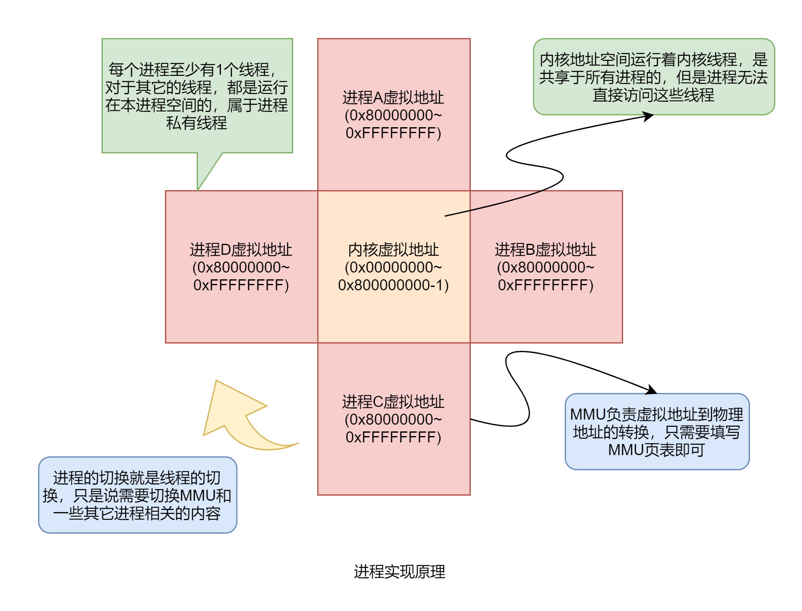

进程管理
一. 描述
进程是具有独立的线性地址空间的线程集合，是线程的容器。在现代操作系统中，硬件的 MMU （内存管理单元）为虚拟内存的实现奠定基础。
线程 + MMU 就可以升级为进程。除此之外，还会有一些其它进程独有的资源。
进程执行独立的程序，程序运行出故障也不会导致系统出现故障。因此可以把一些服务程序放到用户态作为进程执行，当服务出错的时候不会导致 内核崩溃。
二. 原理
进程的实现依赖于 MMU ，来实现进程的虚拟地址空间。每个进程都有一个 MMU 映射表，切换进程的时候需要修改硬件 MMU 寄存器，访问的地址都是新的 MMU 映射的虚拟地址。
由于切换了 MMU 后，访问的地址会发生变化。因此，为了能够保证访问内核的时候是正确的，在映射 MMU 的时候，每个进程都会把部分
页表项映射到内核，并设置权限为内核才能访问，这样就能实现切换 MMU 的时候，内核也能够正常运行，新进程的地址访问也不会出错。
那么 MMU 究竟是何物？MMU 是虚拟地址转换成为物理地址的硬件机制。在开启 MMU 前，访问的地址都是物理地址，
即直接访问的是内存的地址。比如内存只有 32MB ，那么访问的地址就只能是在 32MB 以内进行数据存取。
当开启 MMU 后，访问的地址就是虚拟地址了。此时访问的地址，会通过 MMU 转换成那 32MB 内的物理地址，
再去对物理地址进行存取。比如虚拟地址是 0xF0000000 ，显然超过了 32MB 的内存范围，但是，只要在访问前映射 0xF0000000 到
32MB 内的物理地址，就能正确地进行数据存取，不然，则会产生页面故障。
三、框架图

四. 接口
创建进程的时候，需要从文件系统上加载程序的代码和数据，然后再去执行进程的代码。
启动进程的时候，需要传入进程的名字 name ，要加载程序的路径 path ，以及进程标志 flags。
NX_Error NX_ProcessLaunch(char *name, char *path, NX_U32 flags);
进程执行结束的时候，需要退出，并传入退出时候的状态码。
void NX_ProcessExit(int exitCode);